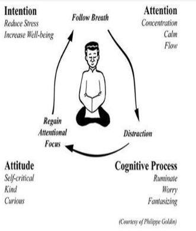

"Whāia te iti kahurangi ki te tūohu koe me he maunga teitei"
Seek the treasure you value most dearly: if you bow your head, let it be to a lofty mountain
{kind=link}
{kind=link}
{kind=link}
{kind=link}
EDA Blog July 2018
Web Developer in training from Wellington, New Zealand
Sprint 3: Meditation process
"So if you come to meditation expecting magic, I’m very sorry; magic is three doors down the corridor."
1 August 2018
Search within yourself by Chade-Meng Tan, Chapter 1: Even an engineer can have emotional intelligence
What did you think about meditation before reading chapter 2?
I took up mindful mediation 2 years ago when I was in a dark place mentally. Its true it brought a mentally clarity, calmness and happiness. In the last 8 months I had a cruve ball thrown at me and I've just come back to meditaing again in the last 2 weeks. I do two guided meditations, 15 mins each twice a day.
What new things have you learnt about meditation?
I need to reincoperate this back into my life on a regular basis! I've been sicker than sick this year so if I can add anything to reduce that I will lovingly do it!! But more than that, I was mediating to clear my mind, I will now make the practice more mindful, and kinder to myself which I is what I was lacking and I will also blu tack this to my computer at work.

Also "Breathing in, I am calm. Breathing out, I smile. This present moment, Wonderful. (Short pause) Thank you for your attention. "
Did any of the suggested meditation techniques stand out to you?
Sogyal Rinpoche, a world-renowned Tibetan Buddhist teacher, suggests a fun and useful way to find your own posture. He recommends sitting like a majestic mountain. The idea is to think of your favorite mountain, say Mount Fuji or Mount Kilimanjaro, and then pretend to be that mountain when you sit. And there you are, Mister (or Miss) Mount Fuji, majestic, dignified, and awe inspiring. The nice thing is if you sit in a way that you feel majestic, dignified, and awe inspiring, it may also be the same posture that helps you become alert and relaxed, and it is kind of fun. Try this out and see if it works for you.
Yes I will!! I will be the most majestic Mount Ruapehu ever!!
Any other musings?
How to appeal to me in a nerdy way, give me quotes and references to studies and will find them and read them. I like lab reports and research, they make a part of me happy. I really enjoyed this chapter!!